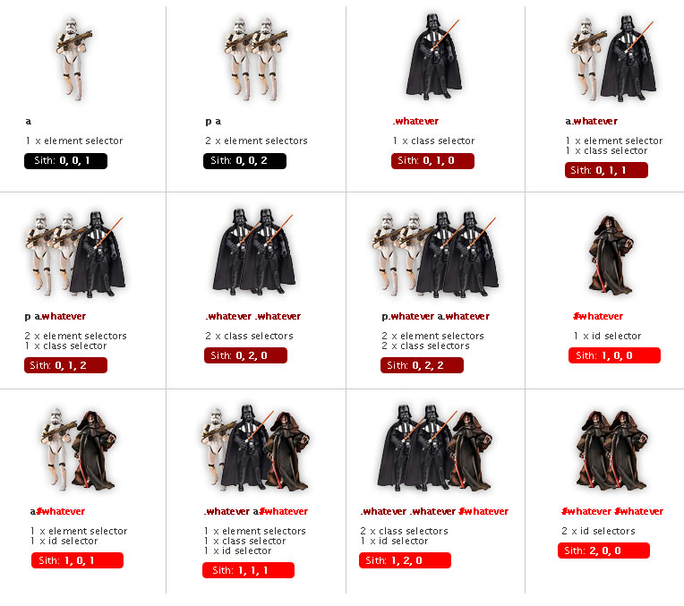
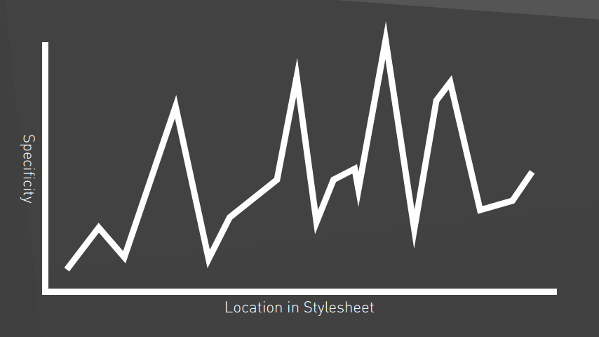
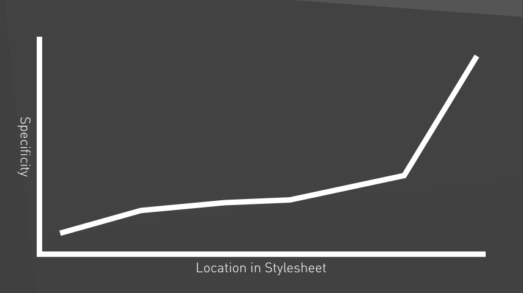
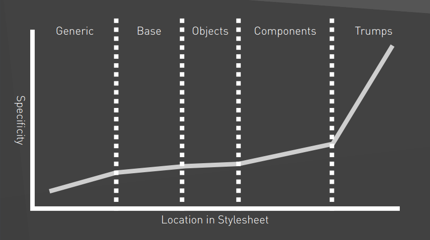

CSS Architecture, that works
OOCSS, BEM & ITCSS
@bfncsCSS Pains
Code is fragile
Even the cleanest code is easily ruined by the first non-expert that edits it.
Dependencies are hidden
Changing something can have unforseeable effects (coupling to location, containers).
Code is duplicated, not reused
If it is hard to understand existing code, duplication looks like the easy way out.
Stale rules
If it is hard to understand existing code, deleting something seems impossible.
Source order matters
You can break something by changing source order of seemingly unrelated things.
Specificity wars!important
CSS language lacks structure. Let's add it by convention!
OOCSS: Object Oriented CSS
Start thinking in CSS objects
Basically, a CSS “object” is a repeating visual pattern, that can be abstracted into an independent snippet of HTML, CSS, and possibly JavaScript. That object can then be reused throughout a site.
@stubbornella
Each CSS class has a single responsibility
Keep the structure and skin separate
From:
#object {
width: 500px;
min-height: 200px;
overflow: auto;
border: solid 1px #ccc;
background: linear-gradient(#ccc, #222);
box-shadow: rgba(0, 0, 0, .5) 2px 2px 5px;
}
To:
.object {
width: 500px;
min-height: 200px;
overflow: auto;
}
.skin {
border: solid 1px #ccc;
background: linear-gradient(#ccc, #222);
box-shadow: rgba(0, 0, 0, .5) 2px 2px 5px;
}
- Find patterns, enable reuse
- „Do I need another object or can I get it done with just another skin? Do I need to write CSS at all?“
- Less code
Separate container and content
From:
ul li.list-item {
// foo
}
To:
.list-item {
// foo
}
- Stop fighting the cascade
- Easily change, move and reuse objects
BEM: Block, Element, Modifier
// A block is a Standalone entity
// that is meaningful on its own.
.block {}
// A block element helps form a block
// that has no meaning on it's own.
.block__element {}
// A block modifier is a flag that
// can alter the appearance or behavior of a block.
.block--modifier {}
Let's build a car!
.car {}
.car__door {}
.car--electric {}
.car--electric__door {}
.car__door--gullwing {}
From:
<form class="site-search full">
<input type="text" class="field">
<input type="Submit" value ="Search" class="button">
</form>
.site-search {}
.site-search .field {}
.site-search .button {}
.site-search.full {}
To:
<form class="site-search site-search--full">
<input type="text" class="site-search__field">
<input type="Submit" value ="Search" class="site-search__button">
</form>
.site-search {} /* Block */
.site-search__field {} /* Element */
.site-search__button {} /* Element */
.site-search--full {} /* Modifier */
- Components are modular
- Selectors have a scope (namespace)
- Easily see dependencies of elements
- Teams develop a common language to talk about elements
- Specificity war is over
But wait!

„My HTML looks all bloated and messy with BEM!“
To write understandable, modular CSS, you need to get around inheritance.
Until CSS natively supports scope, you have to give each element a unique classname, to control inheritance.
And: bloat is gzipped away.
Use your own style convention if it makes you feel better
.block {}
.block-element {}
.block--modifier {}
.camelCase-allThe--selectorThings {}
ITCSS: Inverted Triangle CSS
ITCSS is a simple, sane, scalable & managed architecture for writing CSS. Not a framework!
Invented and evangelized by Harry Roberts (@csswizardry)
Where BEM defines how to compose UI components from multiple rules, ITCSS defines how to compose entire projects from multiple components and other ingredients.
Specificity graph
See for yourself at cssstats.com
How to solve this?
Write CSS in specificity order.
Specificity graph
Specificity graph
1. Settings
- Global SCSS variables and config, e.g. color palette, spacing constants
- No CSS ouptput
2. Tools
- Global mixins and functions
- No CSS output
3. Generic
- Global base rules: reset, normalize, etc.
4. Elements
- Styles for bare HTML elements
- Selectors don't include classes or ids
5. Objects
- Styles for OOCSS structures, e.g. media object
- No cosmetics
- Here and below: selectors consist of classes exclusively
6. Components
- Independent, designed UI components
- This is where most of your code lives
- Use BEM!
7. Trumps
- Ugly but needed helpers and overwrites, e.g.
clearfix
- Do only one thing per rule
- The only place, where
!importantis ok
In each layer
- rules are more specific
- scope is smaller
- rules are progressively added, not overridden
Profit!
- It is clear where to look for something and put something new.
- ITCSS scales, even to large teams and projects.
- Add or remove layers as needed, but stick to the idea
Next level?
React & Co.
CSS in JS. Inline!!!11eleven!1!
CSS Modules
A CSS Module is a CSS file in which all class names and animation names are scoped locally by default.
import styles from "./style.css";
element.innerHTML = '<div class="' + styles.className + '">';
.otherClassName {
composes: className from "./style.css";
}
Web Components
You can think of Web Components as reusable user interface widgets that are created using open Web technology.
Custom Element, HTML Templates, Shadow DOM, HTML Imports
Soon in a browser near you